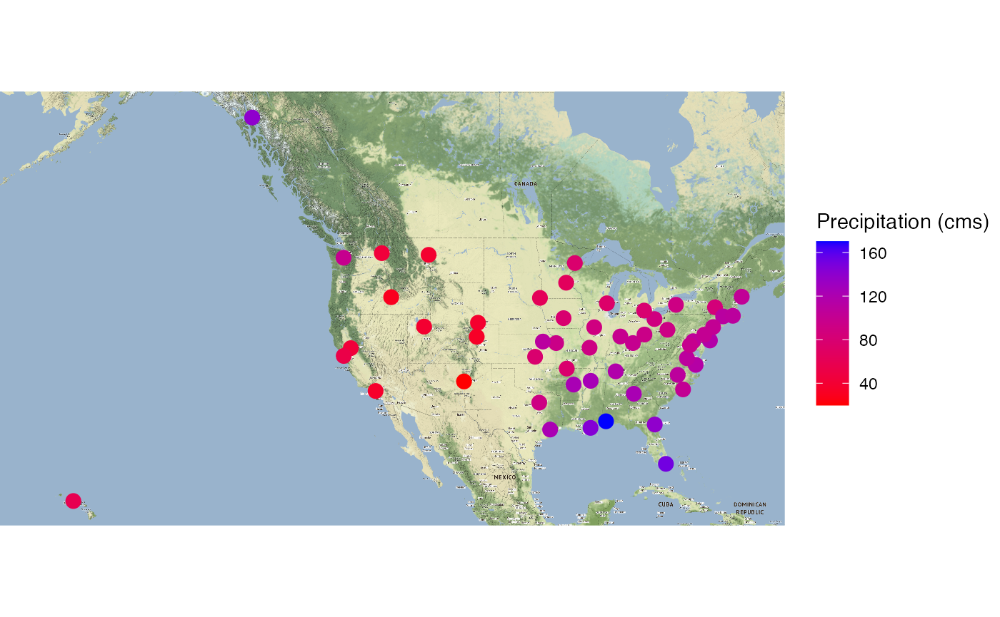
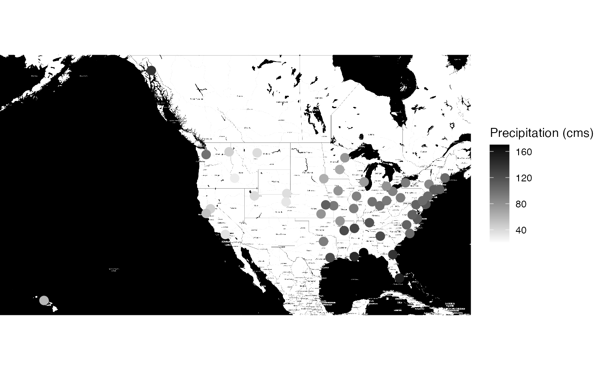
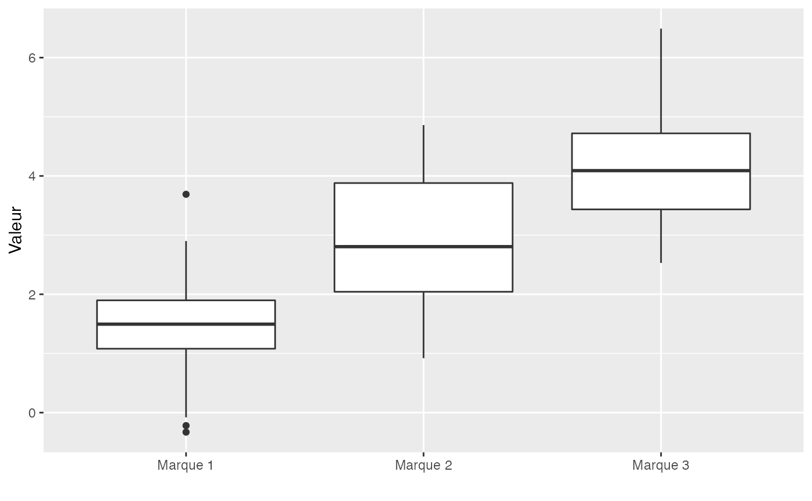
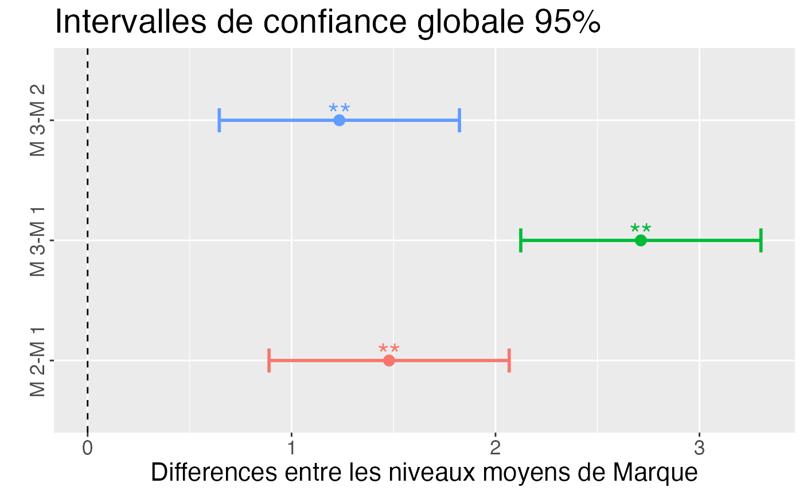

Chapitre 09. Inférence statistique.
Tout le code avec R.
F. Bertrand et M. Maumy
2021-07-18
Source:vignettes/CodeChap09.Rmd
CodeChap09.Rmd

|
|
if(!("sageR" %in% installed.packages())){install.packages("sageR")}
library(sageR)Intervalles de confiance
Pour la moyenne
shapiro.test(Flux)
#>
#> Shapiro-Wilk normality test
#>
#> data: Flux
#> W = 0.97931, p-value = 0.8068
t.test(Flux)
#>
#> One Sample t-test
#>
#> data: Flux
#> t = 80.878, df = 29, p-value < 2.2e-16
#> alternative hypothesis: true mean is not equal to 0
#> 95 percent confidence interval:
#> 13.64142 14.34925
#> sample estimates:
#> mean of x
#> 13.99533Pour la variance
var(Flux)
#> [1] 0.8983154L’hypothèse de normalité a déjà été validée au seuil \(\alpha=5\%\)
if(!("TeachingDemos" %in% installed.packages())){install.packages("TeachingDemos")}
library(TeachingDemos)
TeachingDemos::sigma.test(Flux)
#>
#> One sample Chi-squared test for variance
#>
#> data: Flux
#> X-squared = 26.051, df = 29, p-value = 0.7545
#> alternative hypothesis: true variance is not equal to 1
#> 95 percent confidence interval:
#> 0.5697691 1.6234206
#> sample estimates:
#> var of Flux
#> 0.8983154Test \(t\) pour un échantillon
data(Precipitations_USA)
colnames(Precipitations_USA) <- c("Ville", "Precipitation (inches)", "Precipitation (cms)", "Etat")
if(!("ggmap" %in% installed.packages())){install.packages("ggmap")}
library(ggmap)
#> Le chargement a nécessité le package : ggplot2
#> Google's Terms of Service: https://cloud.google.com/maps-platform/terms/.
#> Please cite ggmap if you use it! See citation("ggmap") for details.
if(!("tidygeocoder" %in% installed.packages())){install.packages("tidygeocoder")}
library(tidygeocoder)
#>
#> Attachement du package : 'tidygeocoder'
#> The following object is masked from 'package:ggmap':
#>
#> geocode
levels(Precipitations_USA[,1]) <- gsub("Philadelphie","Philadelphia",levels(Precipitations_USA[,1]))
gps_coords <- mapply(tidygeocoder::geo, city= Precipitations_USA[,1], state = Precipitations_USA[,4], method = "osm")
levels(Precipitations_USA[,1]) <- gsub("Philadelphia","Philadelphie",levels(Precipitations_USA[,1]))
gps_coords[1,gps_coords[1,]=="Philadelphia"] <- "Philadelphie"
gps_coords_df <- as.data.frame(matrix(unlist(gps_coords),ncol=4,byrow=TRUE))
colnames(gps_coords_df) <- c("Ville", "Etat", "lat", "long")
gps_coords_df$lat <- as.numeric(gps_coords_df$lat)
gps_coords_df$long <- as.numeric(gps_coords_df$long)
precip_gps <- merge(Precipitations_USA,gps_coords_df)
precip_gps_map <- ggmap::get_map(c(left = min(gps_coords_df$long)*1.03, bottom = min(gps_coords_df$lat)/1.2, right = max(gps_coords_df$long)/1.12, top = max(gps_coords_df$lat))*1.03, source = "osm", zoom=6, messaging = FALSE)
#> 209 tiles needed, this may take a while (try a smaller zoom).
#> Source : http://tile.stamen.com/terrain/6/2/18.png
#> Source : http://tile.stamen.com/terrain/6/3/18.png
#> Source : http://tile.stamen.com/terrain/6/4/18.png
#> Source : http://tile.stamen.com/terrain/6/5/18.png
#> Source : http://tile.stamen.com/terrain/6/6/18.png
#> Source : http://tile.stamen.com/terrain/6/7/18.png
#> Source : http://tile.stamen.com/terrain/6/8/18.png
#> Source : http://tile.stamen.com/terrain/6/9/18.png
#> Source : http://tile.stamen.com/terrain/6/10/18.png
#> Source : http://tile.stamen.com/terrain/6/11/18.png
#> Source : http://tile.stamen.com/terrain/6/12/18.png
#> Source : http://tile.stamen.com/terrain/6/13/18.png
#> Source : http://tile.stamen.com/terrain/6/14/18.png
#> Source : http://tile.stamen.com/terrain/6/15/18.png
#> Source : http://tile.stamen.com/terrain/6/16/18.png
#> Source : http://tile.stamen.com/terrain/6/17/18.png
#> Source : http://tile.stamen.com/terrain/6/18/18.png
#> Source : http://tile.stamen.com/terrain/6/19/18.png
#> Source : http://tile.stamen.com/terrain/6/20/18.png
#> Source : http://tile.stamen.com/terrain/6/2/19.png
#> Source : http://tile.stamen.com/terrain/6/3/19.png
#> Source : http://tile.stamen.com/terrain/6/4/19.png
#> Source : http://tile.stamen.com/terrain/6/5/19.png
#> Source : http://tile.stamen.com/terrain/6/6/19.png
#> Source : http://tile.stamen.com/terrain/6/7/19.png
#> Source : http://tile.stamen.com/terrain/6/8/19.png
#> Source : http://tile.stamen.com/terrain/6/9/19.png
#> Source : http://tile.stamen.com/terrain/6/10/19.png
#> Source : http://tile.stamen.com/terrain/6/11/19.png
#> Source : http://tile.stamen.com/terrain/6/12/19.png
#> Source : http://tile.stamen.com/terrain/6/13/19.png
#> Source : http://tile.stamen.com/terrain/6/14/19.png
#> Source : http://tile.stamen.com/terrain/6/15/19.png
#> Source : http://tile.stamen.com/terrain/6/16/19.png
#> Source : http://tile.stamen.com/terrain/6/17/19.png
#> Source : http://tile.stamen.com/terrain/6/18/19.png
#> Source : http://tile.stamen.com/terrain/6/19/19.png
#> Source : http://tile.stamen.com/terrain/6/20/19.png
#> Source : http://tile.stamen.com/terrain/6/2/20.png
#> Source : http://tile.stamen.com/terrain/6/3/20.png
#> Source : http://tile.stamen.com/terrain/6/4/20.png
#> Source : http://tile.stamen.com/terrain/6/5/20.png
#> Source : http://tile.stamen.com/terrain/6/6/20.png
#> Source : http://tile.stamen.com/terrain/6/7/20.png
#> Source : http://tile.stamen.com/terrain/6/8/20.png
#> Source : http://tile.stamen.com/terrain/6/9/20.png
#> Source : http://tile.stamen.com/terrain/6/10/20.png
#> Source : http://tile.stamen.com/terrain/6/11/20.png
#> Source : http://tile.stamen.com/terrain/6/12/20.png
#> Source : http://tile.stamen.com/terrain/6/13/20.png
#> Source : http://tile.stamen.com/terrain/6/14/20.png
#> Source : http://tile.stamen.com/terrain/6/15/20.png
#> Source : http://tile.stamen.com/terrain/6/16/20.png
#> Source : http://tile.stamen.com/terrain/6/17/20.png
#> Source : http://tile.stamen.com/terrain/6/18/20.png
#> Source : http://tile.stamen.com/terrain/6/19/20.png
#> Source : http://tile.stamen.com/terrain/6/20/20.png
#> Source : http://tile.stamen.com/terrain/6/2/21.png
#> Source : http://tile.stamen.com/terrain/6/3/21.png
#> Source : http://tile.stamen.com/terrain/6/4/21.png
#> Source : http://tile.stamen.com/terrain/6/5/21.png
#> Source : http://tile.stamen.com/terrain/6/6/21.png
#> Source : http://tile.stamen.com/terrain/6/7/21.png
#> Source : http://tile.stamen.com/terrain/6/8/21.png
#> Source : http://tile.stamen.com/terrain/6/9/21.png
#> Source : http://tile.stamen.com/terrain/6/10/21.png
#> Source : http://tile.stamen.com/terrain/6/11/21.png
#> Source : http://tile.stamen.com/terrain/6/12/21.png
#> Source : http://tile.stamen.com/terrain/6/13/21.png
#> Source : http://tile.stamen.com/terrain/6/14/21.png
#> Source : http://tile.stamen.com/terrain/6/15/21.png
#> Source : http://tile.stamen.com/terrain/6/16/21.png
#> Source : http://tile.stamen.com/terrain/6/17/21.png
#> Source : http://tile.stamen.com/terrain/6/18/21.png
#> Source : http://tile.stamen.com/terrain/6/19/21.png
#> Source : http://tile.stamen.com/terrain/6/20/21.png
#> Source : http://tile.stamen.com/terrain/6/2/22.png
#> Source : http://tile.stamen.com/terrain/6/3/22.png
#> Source : http://tile.stamen.com/terrain/6/4/22.png
#> Source : http://tile.stamen.com/terrain/6/5/22.png
#> Source : http://tile.stamen.com/terrain/6/6/22.png
#> Source : http://tile.stamen.com/terrain/6/7/22.png
#> Source : http://tile.stamen.com/terrain/6/8/22.png
#> Source : http://tile.stamen.com/terrain/6/9/22.png
#> Source : http://tile.stamen.com/terrain/6/10/22.png
#> Source : http://tile.stamen.com/terrain/6/11/22.png
#> Source : http://tile.stamen.com/terrain/6/12/22.png
#> Source : http://tile.stamen.com/terrain/6/13/22.png
#> Source : http://tile.stamen.com/terrain/6/14/22.png
#> Source : http://tile.stamen.com/terrain/6/15/22.png
#> Source : http://tile.stamen.com/terrain/6/16/22.png
#> Source : http://tile.stamen.com/terrain/6/17/22.png
#> Source : http://tile.stamen.com/terrain/6/18/22.png
#> Source : http://tile.stamen.com/terrain/6/19/22.png
#> Source : http://tile.stamen.com/terrain/6/20/22.png
#> Source : http://tile.stamen.com/terrain/6/2/23.png
#> Source : http://tile.stamen.com/terrain/6/3/23.png
#> Source : http://tile.stamen.com/terrain/6/4/23.png
#> Source : http://tile.stamen.com/terrain/6/5/23.png
#> Source : http://tile.stamen.com/terrain/6/6/23.png
#> Source : http://tile.stamen.com/terrain/6/7/23.png
#> Source : http://tile.stamen.com/terrain/6/8/23.png
#> Source : http://tile.stamen.com/terrain/6/9/23.png
#> Source : http://tile.stamen.com/terrain/6/10/23.png
#> Source : http://tile.stamen.com/terrain/6/11/23.png
#> Source : http://tile.stamen.com/terrain/6/12/23.png
#> Source : http://tile.stamen.com/terrain/6/13/23.png
#> Source : http://tile.stamen.com/terrain/6/14/23.png
#> Source : http://tile.stamen.com/terrain/6/15/23.png
#> Source : http://tile.stamen.com/terrain/6/16/23.png
#> Source : http://tile.stamen.com/terrain/6/17/23.png
#> Source : http://tile.stamen.com/terrain/6/18/23.png
#> Source : http://tile.stamen.com/terrain/6/19/23.png
#> Source : http://tile.stamen.com/terrain/6/20/23.png
#> Source : http://tile.stamen.com/terrain/6/2/24.png
#> Source : http://tile.stamen.com/terrain/6/3/24.png
#> Source : http://tile.stamen.com/terrain/6/4/24.png
#> Source : http://tile.stamen.com/terrain/6/5/24.png
#> Source : http://tile.stamen.com/terrain/6/6/24.png
#> Source : http://tile.stamen.com/terrain/6/7/24.png
#> Source : http://tile.stamen.com/terrain/6/8/24.png
#> Source : http://tile.stamen.com/terrain/6/9/24.png
#> Source : http://tile.stamen.com/terrain/6/10/24.png
#> Source : http://tile.stamen.com/terrain/6/11/24.png
#> Source : http://tile.stamen.com/terrain/6/12/24.png
#> Source : http://tile.stamen.com/terrain/6/13/24.png
#> Source : http://tile.stamen.com/terrain/6/14/24.png
#> Source : http://tile.stamen.com/terrain/6/15/24.png
#> Source : http://tile.stamen.com/terrain/6/16/24.png
#> Source : http://tile.stamen.com/terrain/6/17/24.png
#> Source : http://tile.stamen.com/terrain/6/18/24.png
#> Source : http://tile.stamen.com/terrain/6/19/24.png
#> Source : http://tile.stamen.com/terrain/6/20/24.png
#> Source : http://tile.stamen.com/terrain/6/2/25.png
#> Source : http://tile.stamen.com/terrain/6/3/25.png
#> Source : http://tile.stamen.com/terrain/6/4/25.png
#> Source : http://tile.stamen.com/terrain/6/5/25.png
#> Source : http://tile.stamen.com/terrain/6/6/25.png
#> Source : http://tile.stamen.com/terrain/6/7/25.png
#> Source : http://tile.stamen.com/terrain/6/8/25.png
#> Source : http://tile.stamen.com/terrain/6/9/25.png
#> Source : http://tile.stamen.com/terrain/6/10/25.png
#> Source : http://tile.stamen.com/terrain/6/11/25.png
#> Source : http://tile.stamen.com/terrain/6/12/25.png
#> Source : http://tile.stamen.com/terrain/6/13/25.png
#> Source : http://tile.stamen.com/terrain/6/14/25.png
#> Source : http://tile.stamen.com/terrain/6/15/25.png
#> Source : http://tile.stamen.com/terrain/6/16/25.png
#> Source : http://tile.stamen.com/terrain/6/17/25.png
#> Source : http://tile.stamen.com/terrain/6/18/25.png
#> Source : http://tile.stamen.com/terrain/6/19/25.png
#> Source : http://tile.stamen.com/terrain/6/20/25.png
#> Source : http://tile.stamen.com/terrain/6/2/26.png
#> Source : http://tile.stamen.com/terrain/6/3/26.png
#> Source : http://tile.stamen.com/terrain/6/4/26.png
#> Source : http://tile.stamen.com/terrain/6/5/26.png
#> Source : http://tile.stamen.com/terrain/6/6/26.png
#> Source : http://tile.stamen.com/terrain/6/7/26.png
#> Source : http://tile.stamen.com/terrain/6/8/26.png
#> Source : http://tile.stamen.com/terrain/6/9/26.png
#> Source : http://tile.stamen.com/terrain/6/10/26.png
#> Source : http://tile.stamen.com/terrain/6/11/26.png
#> Source : http://tile.stamen.com/terrain/6/12/26.png
#> Source : http://tile.stamen.com/terrain/6/13/26.png
#> Source : http://tile.stamen.com/terrain/6/14/26.png
#> Source : http://tile.stamen.com/terrain/6/15/26.png
#> Source : http://tile.stamen.com/terrain/6/16/26.png
#> Source : http://tile.stamen.com/terrain/6/17/26.png
#> Source : http://tile.stamen.com/terrain/6/18/26.png
#> Source : http://tile.stamen.com/terrain/6/19/26.png
#> Source : http://tile.stamen.com/terrain/6/20/26.png
#> Source : http://tile.stamen.com/terrain/6/2/27.png
#> Source : http://tile.stamen.com/terrain/6/3/27.png
#> Source : http://tile.stamen.com/terrain/6/4/27.png
#> Source : http://tile.stamen.com/terrain/6/5/27.png
#> Source : http://tile.stamen.com/terrain/6/6/27.png
#> Source : http://tile.stamen.com/terrain/6/7/27.png
#> Source : http://tile.stamen.com/terrain/6/8/27.png
#> Source : http://tile.stamen.com/terrain/6/9/27.png
#> Source : http://tile.stamen.com/terrain/6/10/27.png
#> Source : http://tile.stamen.com/terrain/6/11/27.png
#> Source : http://tile.stamen.com/terrain/6/12/27.png
#> Source : http://tile.stamen.com/terrain/6/13/27.png
#> Source : http://tile.stamen.com/terrain/6/14/27.png
#> Source : http://tile.stamen.com/terrain/6/15/27.png
#> Source : http://tile.stamen.com/terrain/6/16/27.png
#> Source : http://tile.stamen.com/terrain/6/17/27.png
#> Source : http://tile.stamen.com/terrain/6/18/27.png
#> Source : http://tile.stamen.com/terrain/6/19/27.png
#> Source : http://tile.stamen.com/terrain/6/20/27.png
#> Source : http://tile.stamen.com/terrain/6/2/28.png
#> Source : http://tile.stamen.com/terrain/6/3/28.png
#> Source : http://tile.stamen.com/terrain/6/4/28.png
#> Source : http://tile.stamen.com/terrain/6/5/28.png
#> Source : http://tile.stamen.com/terrain/6/6/28.png
#> Source : http://tile.stamen.com/terrain/6/7/28.png
#> Source : http://tile.stamen.com/terrain/6/8/28.png
#> Source : http://tile.stamen.com/terrain/6/9/28.png
#> Source : http://tile.stamen.com/terrain/6/10/28.png
#> Source : http://tile.stamen.com/terrain/6/11/28.png
#> Source : http://tile.stamen.com/terrain/6/12/28.png
#> Source : http://tile.stamen.com/terrain/6/13/28.png
#> Source : http://tile.stamen.com/terrain/6/14/28.png
#> Source : http://tile.stamen.com/terrain/6/15/28.png
#> Source : http://tile.stamen.com/terrain/6/16/28.png
#> Source : http://tile.stamen.com/terrain/6/17/28.png
#> Source : http://tile.stamen.com/terrain/6/18/28.png
#> Source : http://tile.stamen.com/terrain/6/19/28.png
#> Source : http://tile.stamen.com/terrain/6/20/28.png
ggmap::ggmap(precip_gps_map,extent = "device") +
geom_point(aes(x = long, y = lat, color=`Precipitation (cms)`),
data = precip_gps, size = 5, pch = 20) +
scale_color_gradient(low="red", high="blue")
precip_gps_map_bw <- ggmap::get_stamenmap(c(left = min(gps_coords_df$long)*1.03, bottom = min(gps_coords_df$lat)/1.2, right = max(gps_coords_df$long)/1.12, top = max(gps_coords_df$lat))*1.03, source = "stamen", zoom=6, maptype="toner")
#> 209 tiles needed, this may take a while (try a smaller zoom).
#> Source : http://tile.stamen.com/toner/6/2/18.png
#> Source : http://tile.stamen.com/toner/6/3/18.png
#> Source : http://tile.stamen.com/toner/6/4/18.png
#> Source : http://tile.stamen.com/toner/6/5/18.png
#> Source : http://tile.stamen.com/toner/6/6/18.png
#> Source : http://tile.stamen.com/toner/6/7/18.png
#> Source : http://tile.stamen.com/toner/6/8/18.png
#> Source : http://tile.stamen.com/toner/6/9/18.png
#> Source : http://tile.stamen.com/toner/6/10/18.png
#> Source : http://tile.stamen.com/toner/6/11/18.png
#> Source : http://tile.stamen.com/toner/6/12/18.png
#> Source : http://tile.stamen.com/toner/6/13/18.png
#> Source : http://tile.stamen.com/toner/6/14/18.png
#> Source : http://tile.stamen.com/toner/6/15/18.png
#> Source : http://tile.stamen.com/toner/6/16/18.png
#> Source : http://tile.stamen.com/toner/6/17/18.png
#> Source : http://tile.stamen.com/toner/6/18/18.png
#> Source : http://tile.stamen.com/toner/6/19/18.png
#> Source : http://tile.stamen.com/toner/6/20/18.png
#> Source : http://tile.stamen.com/toner/6/2/19.png
#> Source : http://tile.stamen.com/toner/6/3/19.png
#> Source : http://tile.stamen.com/toner/6/4/19.png
#> Source : http://tile.stamen.com/toner/6/5/19.png
#> Source : http://tile.stamen.com/toner/6/6/19.png
#> Source : http://tile.stamen.com/toner/6/7/19.png
#> Source : http://tile.stamen.com/toner/6/8/19.png
#> Source : http://tile.stamen.com/toner/6/9/19.png
#> Source : http://tile.stamen.com/toner/6/10/19.png
#> Source : http://tile.stamen.com/toner/6/11/19.png
#> Source : http://tile.stamen.com/toner/6/12/19.png
#> Source : http://tile.stamen.com/toner/6/13/19.png
#> Source : http://tile.stamen.com/toner/6/14/19.png
#> Source : http://tile.stamen.com/toner/6/15/19.png
#> Source : http://tile.stamen.com/toner/6/16/19.png
#> Source : http://tile.stamen.com/toner/6/17/19.png
#> Source : http://tile.stamen.com/toner/6/18/19.png
#> Source : http://tile.stamen.com/toner/6/19/19.png
#> Source : http://tile.stamen.com/toner/6/20/19.png
#> Source : http://tile.stamen.com/toner/6/2/20.png
#> Source : http://tile.stamen.com/toner/6/3/20.png
#> Source : http://tile.stamen.com/toner/6/4/20.png
#> Source : http://tile.stamen.com/toner/6/5/20.png
#> Source : http://tile.stamen.com/toner/6/6/20.png
#> Source : http://tile.stamen.com/toner/6/7/20.png
#> Source : http://tile.stamen.com/toner/6/8/20.png
#> Source : http://tile.stamen.com/toner/6/9/20.png
#> Source : http://tile.stamen.com/toner/6/10/20.png
#> Source : http://tile.stamen.com/toner/6/11/20.png
#> Source : http://tile.stamen.com/toner/6/12/20.png
#> Source : http://tile.stamen.com/toner/6/13/20.png
#> Source : http://tile.stamen.com/toner/6/14/20.png
#> Source : http://tile.stamen.com/toner/6/15/20.png
#> Source : http://tile.stamen.com/toner/6/16/20.png
#> Source : http://tile.stamen.com/toner/6/17/20.png
#> Source : http://tile.stamen.com/toner/6/18/20.png
#> Source : http://tile.stamen.com/toner/6/19/20.png
#> Source : http://tile.stamen.com/toner/6/20/20.png
#> Source : http://tile.stamen.com/toner/6/2/21.png
#> Source : http://tile.stamen.com/toner/6/3/21.png
#> Source : http://tile.stamen.com/toner/6/4/21.png
#> Source : http://tile.stamen.com/toner/6/5/21.png
#> Source : http://tile.stamen.com/toner/6/6/21.png
#> Source : http://tile.stamen.com/toner/6/7/21.png
#> Source : http://tile.stamen.com/toner/6/8/21.png
#> Source : http://tile.stamen.com/toner/6/9/21.png
#> Source : http://tile.stamen.com/toner/6/10/21.png
#> Source : http://tile.stamen.com/toner/6/11/21.png
#> Source : http://tile.stamen.com/toner/6/12/21.png
#> Source : http://tile.stamen.com/toner/6/13/21.png
#> Source : http://tile.stamen.com/toner/6/14/21.png
#> Source : http://tile.stamen.com/toner/6/15/21.png
#> Source : http://tile.stamen.com/toner/6/16/21.png
#> Source : http://tile.stamen.com/toner/6/17/21.png
#> Source : http://tile.stamen.com/toner/6/18/21.png
#> Source : http://tile.stamen.com/toner/6/19/21.png
#> Source : http://tile.stamen.com/toner/6/20/21.png
#> Source : http://tile.stamen.com/toner/6/2/22.png
#> Source : http://tile.stamen.com/toner/6/3/22.png
#> Source : http://tile.stamen.com/toner/6/4/22.png
#> Source : http://tile.stamen.com/toner/6/5/22.png
#> Source : http://tile.stamen.com/toner/6/6/22.png
#> Source : http://tile.stamen.com/toner/6/7/22.png
#> Source : http://tile.stamen.com/toner/6/8/22.png
#> Source : http://tile.stamen.com/toner/6/9/22.png
#> Source : http://tile.stamen.com/toner/6/10/22.png
#> Source : http://tile.stamen.com/toner/6/11/22.png
#> Source : http://tile.stamen.com/toner/6/12/22.png
#> Source : http://tile.stamen.com/toner/6/13/22.png
#> Source : http://tile.stamen.com/toner/6/14/22.png
#> Source : http://tile.stamen.com/toner/6/15/22.png
#> Source : http://tile.stamen.com/toner/6/16/22.png
#> Source : http://tile.stamen.com/toner/6/17/22.png
#> Source : http://tile.stamen.com/toner/6/18/22.png
#> Source : http://tile.stamen.com/toner/6/19/22.png
#> Source : http://tile.stamen.com/toner/6/20/22.png
#> Source : http://tile.stamen.com/toner/6/2/23.png
#> Source : http://tile.stamen.com/toner/6/3/23.png
#> Source : http://tile.stamen.com/toner/6/4/23.png
#> Source : http://tile.stamen.com/toner/6/5/23.png
#> Source : http://tile.stamen.com/toner/6/6/23.png
#> Source : http://tile.stamen.com/toner/6/7/23.png
#> Source : http://tile.stamen.com/toner/6/8/23.png
#> Source : http://tile.stamen.com/toner/6/9/23.png
#> Source : http://tile.stamen.com/toner/6/10/23.png
#> Source : http://tile.stamen.com/toner/6/11/23.png
#> Source : http://tile.stamen.com/toner/6/12/23.png
#> Source : http://tile.stamen.com/toner/6/13/23.png
#> Source : http://tile.stamen.com/toner/6/14/23.png
#> Source : http://tile.stamen.com/toner/6/15/23.png
#> Source : http://tile.stamen.com/toner/6/16/23.png
#> Source : http://tile.stamen.com/toner/6/17/23.png
#> Source : http://tile.stamen.com/toner/6/18/23.png
#> Source : http://tile.stamen.com/toner/6/19/23.png
#> Source : http://tile.stamen.com/toner/6/20/23.png
#> Source : http://tile.stamen.com/toner/6/2/24.png
#> Source : http://tile.stamen.com/toner/6/3/24.png
#> Source : http://tile.stamen.com/toner/6/4/24.png
#> Source : http://tile.stamen.com/toner/6/5/24.png
#> Source : http://tile.stamen.com/toner/6/6/24.png
#> Source : http://tile.stamen.com/toner/6/7/24.png
#> Source : http://tile.stamen.com/toner/6/8/24.png
#> Source : http://tile.stamen.com/toner/6/9/24.png
#> Source : http://tile.stamen.com/toner/6/10/24.png
#> Source : http://tile.stamen.com/toner/6/11/24.png
#> Source : http://tile.stamen.com/toner/6/12/24.png
#> Source : http://tile.stamen.com/toner/6/13/24.png
#> Source : http://tile.stamen.com/toner/6/14/24.png
#> Source : http://tile.stamen.com/toner/6/15/24.png
#> Source : http://tile.stamen.com/toner/6/16/24.png
#> Source : http://tile.stamen.com/toner/6/17/24.png
#> Source : http://tile.stamen.com/toner/6/18/24.png
#> Source : http://tile.stamen.com/toner/6/19/24.png
#> Source : http://tile.stamen.com/toner/6/20/24.png
#> Source : http://tile.stamen.com/toner/6/2/25.png
#> Source : http://tile.stamen.com/toner/6/3/25.png
#> Source : http://tile.stamen.com/toner/6/4/25.png
#> Source : http://tile.stamen.com/toner/6/5/25.png
#> Source : http://tile.stamen.com/toner/6/6/25.png
#> Source : http://tile.stamen.com/toner/6/7/25.png
#> Source : http://tile.stamen.com/toner/6/8/25.png
#> Source : http://tile.stamen.com/toner/6/9/25.png
#> Source : http://tile.stamen.com/toner/6/10/25.png
#> Source : http://tile.stamen.com/toner/6/11/25.png
#> Source : http://tile.stamen.com/toner/6/12/25.png
#> Source : http://tile.stamen.com/toner/6/13/25.png
#> Source : http://tile.stamen.com/toner/6/14/25.png
#> Source : http://tile.stamen.com/toner/6/15/25.png
#> Source : http://tile.stamen.com/toner/6/16/25.png
#> Source : http://tile.stamen.com/toner/6/17/25.png
#> Source : http://tile.stamen.com/toner/6/18/25.png
#> Source : http://tile.stamen.com/toner/6/19/25.png
#> Source : http://tile.stamen.com/toner/6/20/25.png
#> Source : http://tile.stamen.com/toner/6/2/26.png
#> Source : http://tile.stamen.com/toner/6/3/26.png
#> Source : http://tile.stamen.com/toner/6/4/26.png
#> Source : http://tile.stamen.com/toner/6/5/26.png
#> Source : http://tile.stamen.com/toner/6/6/26.png
#> Source : http://tile.stamen.com/toner/6/7/26.png
#> Source : http://tile.stamen.com/toner/6/8/26.png
#> Source : http://tile.stamen.com/toner/6/9/26.png
#> Source : http://tile.stamen.com/toner/6/10/26.png
#> Source : http://tile.stamen.com/toner/6/11/26.png
#> Source : http://tile.stamen.com/toner/6/12/26.png
#> Source : http://tile.stamen.com/toner/6/13/26.png
#> Source : http://tile.stamen.com/toner/6/14/26.png
#> Source : http://tile.stamen.com/toner/6/15/26.png
#> Source : http://tile.stamen.com/toner/6/16/26.png
#> Source : http://tile.stamen.com/toner/6/17/26.png
#> Source : http://tile.stamen.com/toner/6/18/26.png
#> Source : http://tile.stamen.com/toner/6/19/26.png
#> Source : http://tile.stamen.com/toner/6/20/26.png
#> Source : http://tile.stamen.com/toner/6/2/27.png
#> Source : http://tile.stamen.com/toner/6/3/27.png
#> Source : http://tile.stamen.com/toner/6/4/27.png
#> Source : http://tile.stamen.com/toner/6/5/27.png
#> Source : http://tile.stamen.com/toner/6/6/27.png
#> Source : http://tile.stamen.com/toner/6/7/27.png
#> Source : http://tile.stamen.com/toner/6/8/27.png
#> Source : http://tile.stamen.com/toner/6/9/27.png
#> Source : http://tile.stamen.com/toner/6/10/27.png
#> Source : http://tile.stamen.com/toner/6/11/27.png
#> Source : http://tile.stamen.com/toner/6/12/27.png
#> Source : http://tile.stamen.com/toner/6/13/27.png
#> Source : http://tile.stamen.com/toner/6/14/27.png
#> Source : http://tile.stamen.com/toner/6/15/27.png
#> Source : http://tile.stamen.com/toner/6/16/27.png
#> Source : http://tile.stamen.com/toner/6/17/27.png
#> Source : http://tile.stamen.com/toner/6/18/27.png
#> Source : http://tile.stamen.com/toner/6/19/27.png
#> Source : http://tile.stamen.com/toner/6/20/27.png
#> Source : http://tile.stamen.com/toner/6/2/28.png
#> Source : http://tile.stamen.com/toner/6/3/28.png
#> Source : http://tile.stamen.com/toner/6/4/28.png
#> Source : http://tile.stamen.com/toner/6/5/28.png
#> Source : http://tile.stamen.com/toner/6/6/28.png
#> Source : http://tile.stamen.com/toner/6/7/28.png
#> Source : http://tile.stamen.com/toner/6/8/28.png
#> Source : http://tile.stamen.com/toner/6/9/28.png
#> Source : http://tile.stamen.com/toner/6/10/28.png
#> Source : http://tile.stamen.com/toner/6/11/28.png
#> Source : http://tile.stamen.com/toner/6/12/28.png
#> Source : http://tile.stamen.com/toner/6/13/28.png
#> Source : http://tile.stamen.com/toner/6/14/28.png
#> Source : http://tile.stamen.com/toner/6/15/28.png
#> Source : http://tile.stamen.com/toner/6/16/28.png
#> Source : http://tile.stamen.com/toner/6/17/28.png
#> Source : http://tile.stamen.com/toner/6/18/28.png
#> Source : http://tile.stamen.com/toner/6/19/28.png
#> Source : http://tile.stamen.com/toner/6/20/28.png
ggmap::ggmap(precip_gps_map_bw,extent = "device") +
geom_point(aes(x = long, y = lat, color=`Precipitation (cms)`),
data = precip_gps, size = 5, pch = 20, fill = "white") +
scale_color_gradient(low="white", high="black")
with(Precipitations_USA, shapiro.test(`Precipitation (cms)`))
#>
#> Shapiro-Wilk normality test
#>
#> data: Precipitation (cms)
#> W = 0.97241, p-value = 0.1911
with(Precipitations_USA,qqnorm(`Precipitation (cms)`))
with(Precipitations_USA,qqline(`Precipitation (cms)`))
with(Precipitations_USA, t.test(`Precipitation (cms)`, mu = 83.90))
#>
#> One Sample t-test
#>
#> data: Precipitation (cms)
#> t = 1.6898, df = 59, p-value = 0.09635
#> alternative hypothesis: true mean is not equal to 83.9
#> 95 percent confidence interval:
#> 82.61107 99.18519
#> sample estimates:
#> mean of x
#> 90.89813
with(Precipitations_USA, TeachingDemos::sigma.test(`Precipitation (cms)`))
#>
#> One sample Chi-squared test for variance
#>
#> data: Precipitation (cms)
#> X-squared = 60717, df = 59, p-value < 2.2e-16
#> alternative hypothesis: true variance is not equal to 1
#> 95 percent confidence interval:
#> 739.3954 1530.8720
#> sample estimates:
#> var of Precipitation (cms)
#> 1029.106
data(Resistance)
if(!("TeachingDemos" %in% installed.packages())){install.packages("TeachingDemos")}
TeachingDemos::sigma.test(Resistance,sigmasq = 8)
#>
#> One sample Chi-squared test for variance
#>
#> data: Resistance
#> X-squared = 38.47, df = 29, p-value = 0.2245
#> alternative hypothesis: true variance is not equal to 8
#> 95 percent confidence interval:
#> 6.731113 19.178694
#> sample estimates:
#> var of Resistance
#> 10.61248
binom.test(30,200,p=0.10,alternative=c("greater"))
#>
#> Exact binomial test
#>
#> data: 30 and 200
#> number of successes = 30, number of trials = 200, p-value = 0.01633
#> alternative hypothesis: true probability of success is greater than 0.1
#> 95 percent confidence interval:
#> 0.1100814 1.0000000
#> sample estimates:
#> probability of success
#> 0.15Test \(t\) pour deux échantillons indépendants.
data(Essence)
shapiro.test(Essence$Aube)
#>
#> Shapiro-Wilk normality test
#>
#> data: Essence$Aube
#> W = 0.97524, p-value = 0.6897
shapiro.test(Essence$Marne)
#>
#> Shapiro-Wilk normality test
#>
#> data: Essence$Marne
#> W = 0.95879, p-value = 0.2884
with(Essence, var.test(x=Aube,y=Marne))
#>
#> F test to compare two variances
#>
#> data: Aube and Marne
#> F = 1.6155, num df = 29, denom df = 29, p-value = 0.2025
#> alternative hypothesis: true ratio of variances is not equal to 1
#> 95 percent confidence interval:
#> 0.7689431 3.3942558
#> sample estimates:
#> ratio of variances
#> 1.615546
with(Essence, t.test(x=Aube,y=Marne, var.equal = TRUE))
#>
#> Two Sample t-test
#>
#> data: Aube and Marne
#> t = 21.852, df = 58, p-value < 2.2e-16
#> alternative hypothesis: true difference in means is not equal to 0
#> 95 percent confidence interval:
#> 0.0960779 0.1154554
#> sample estimates:
#> mean of x mean of y
#> 1.529867 1.424100
with(Essence, t.test(x=Aube,y=Marne))
#>
#> Welch Two Sample t-test
#>
#> data: Aube and Marne
#> t = 21.852, df = 54.956, p-value < 2.2e-16
#> alternative hypothesis: true difference in means is not equal to 0
#> 95 percent confidence interval:
#> 0.09606647 0.11546687
#> sample estimates:
#> mean of x mean of y
#> 1.529867 1.424100Test \(t\) pour deux échantillons appariés
with(Copies,shapiro.test(Correcteur.A-Correcteur.B))
#>
#> Shapiro-Wilk normality test
#>
#> data: Correcteur.A - Correcteur.B
#> W = 0.97738, p-value = 0.7524
with(Copies,t.test(Correcteur.A-Correcteur.B))
#>
#> One Sample t-test
#>
#> data: Correcteur.A - Correcteur.B
#> t = -2.4078, df = 29, p-value = 0.02263
#> alternative hypothesis: true mean is not equal to 0
#> 95 percent confidence interval:
#> -1.07881769 -0.08784898
#> sample estimates:
#> mean of x
#> -0.5833333
with(Copies,t.test(Correcteur.A,Correcteur.B,paired=TRUE))
#>
#> Paired t-test
#>
#> data: Correcteur.A and Correcteur.B
#> t = -2.4078, df = 29, p-value = 0.02263
#> alternative hypothesis: true difference in means is not equal to 0
#> 95 percent confidence interval:
#> -1.07881769 -0.08784898
#> sample estimates:
#> mean of the differences
#> -0.5833333Analyse de la variance à un facteur
library(sageR)
data(Marque.Valeur)
str(Marque.Valeur)
#> 'data.frame': 90 obs. of 2 variables:
#> $ Marque: Factor w/ 3 levels "Marque 1","Marque 2",..: 1 1 1 1 1 1 1 1 1 1 ...
#> $ Valeur: num 1.5 1.95 1.84 1.08 1.28 2.07 -0.33 1.9 1.94 3.69 ...
data(Marque.Valeur.large)
str(Marque.Valeur.large)
#> 'data.frame': 30 obs. of 3 variables:
#> $ Marque.1: num 1.5 1.95 1.84 1.08 1.28 2.07 -0.33 1.9 1.94 3.69 ...
#> $ Marque.2: num 1.98 1.86 3.3 2.19 3.43 2.49 1.98 2.84 4 3.13 ...
#> $ Marque.3: num 4.46 6.49 4.69 3.23 4.53 3.61 3.45 2.91 4.25 4.12 ...
round(with(Marque.Valeur,tapply(Valeur,Marque,mean)),3)
#> Marque 1 Marque 2 Marque 3
#> 1.411 2.889 4.124
round(with(Marque.Valeur,tapply(Valeur,Marque,sd)),3)
#> Marque 1 Marque 2 Marque 3
#> 0.870 1.051 0.939
round(with(Marque.Valeur,tapply(Valeur,Marque,var)),3)
#> Marque 1 Marque 2 Marque 3
#> 0.756 1.105 0.882
options(contrasts = c("contr.sum","contr.sum"))
lm.Marque.Valeur <- lm(Valeur~Marque,data=Marque.Valeur)
anova(lm.Marque.Valeur)
#> Analysis of Variance Table
#>
#> Response: Valeur
#> Df Sum Sq Mean Sq F value Pr(>F)
#> Marque 2 110.676 55.338 60.502 < 2.2e-16 ***
#> Residuals 87 79.575 0.915
#> ---
#> Signif. codes: 0 '***' 0.001 '**' 0.01 '*' 0.05 '.' 0.1 ' ' 1
res.model.MV <- residuals(lm.Marque.Valeur)
shapiro.test(res.model.MV)
#>
#> Shapiro-Wilk normality test
#>
#> data: res.model.MV
#> W = 0.98958, p-value = 0.6999
bartlett.test(res.model.MV,Marque.Valeur$Marque)
#>
#> Bartlett test of homogeneity of variances
#>
#> data: res.model.MV and Marque.Valeur$Marque
#> Bartlett's K-squared = 1.0505, df = 2, p-value = 0.5914
if(!("ggiraphExtra" %in% installed.packages())){install.packages("ggiraphExtra")}
library(ggiraphExtra)
Marque.Valeur$Marque<-as.factor(rep(paste("M",1:3),rep(rep(30,3))))
oav.Marque.Valeur <- aov(Valeur~Marque,data=Marque.Valeur)
resHSD <- TukeyHSD(oav.Marque.Valeur)
resHSD
#> Tukey multiple comparisons of means
#> 95% family-wise confidence level
#>
#> Fit: aov(formula = Valeur ~ Marque, data = Marque.Valeur)
#>
#> $Marque
#> diff lwr upr p adj
#> M 2-M 1 1.478333 0.8895222 2.067144 1.0e-07
#> M 3-M 1 2.712667 2.1238555 3.301478 0.0e+00
#> M 3-M 2 1.234333 0.6455222 1.823144 8.8e-06
ggHSD(resHSD) + ylab("Differences entre les niveaux moyens de Marque") + ggtitle("Intervalles de confiance globale 95%")
C1=1+1/(3*(nlevels(Marque.Valeur$Marque)-1))*(sum(1/(table(Marque.Valeur$Marque)-1))-1/(nrow(Marque.Valeur)-nlevels(Marque.Valeur$Marque)))
C1
#> [1] 1.015326
1/C1*((nrow(Marque.Valeur)-nlevels(Marque.Valeur$Marque))*log(summary(oav.Marque.Valeur)[[1]]$`Mean Sq`[2])-sum((table(Marque.Valeur$Marque)-1)*log(with(Marque.Valeur,tapply(Valeur,Marque,var)))))
#> [1] 1.050525
bartlett.test(res.model.MV,Marque.Valeur$Marque)
#>
#> Bartlett test of homogeneity of variances
#>
#> data: res.model.MV and Marque.Valeur$Marque
#> Bartlett's K-squared = 1.0505, df = 2, p-value = 0.5914QQplots
oldpar <- par()
Chemin <- "~/Documents/Recherche/DeBoeck/Graphes/"
colmodel="cmyk"
library(VGAM)
#> Le chargement a nécessité le package : stats4
#> Le chargement a nécessité le package : splines
par(mar = c(0.2, 0.2, 0.2, 0.2) + 0.1, mgp = c(2, 1, 0))
ech_norm <- rnorm(100)
qqnorm(ech_norm, ylab="",main="", xaxt="n", yaxt="n")
legend("bottomright",legend="(a)",cex=2,bty="n")
par(mar = c(0.2, 0.2, 0.2, 0.2) + 0.1, mgp = c(2, 1, 0))
ech_laplace <- rlaplace(100,1/sqrt(2))
qqnorm(ech_laplace, ylab="",main="", xaxt="n", yaxt="n")
legend("bottomright",legend="(b)",cex=2,bty="n")
par(mar = c(0.2, 0.2, 0.2, 0.2) + 0.1, mgp = c(2, 1, 0))
ech_unif <- runif(100,-2,2)
qqnorm(ech_unif, ylab="(c)",main="", xaxt="n", yaxt="n")
legend("bottomright",legend="(c)",cex=2,bty="n")
par(mar = c(0.2, 0.2, 0.2, 0.2) + 0.1, mgp = c(2, 1, 0))
ech_exp <- rexp(100,1)
qqnorm(ech_exp, ylab="",main="", xaxt="n", yaxt="n")
legend("bottomright",legend="(d)",cex=2,bty="n")